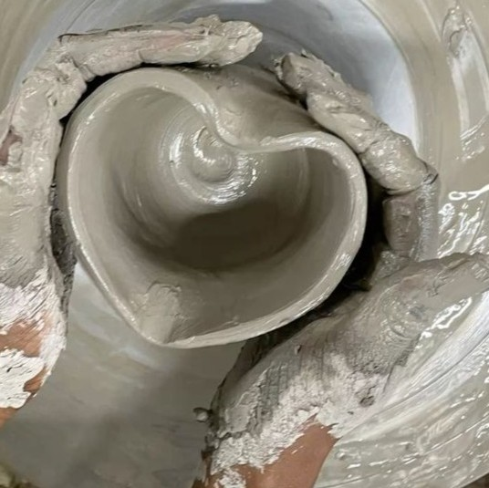
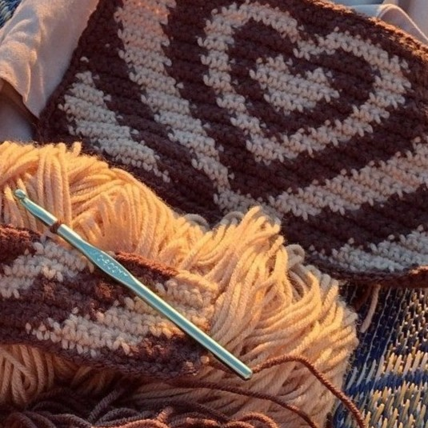
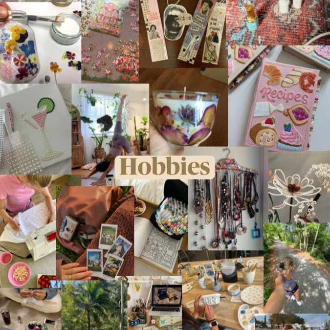
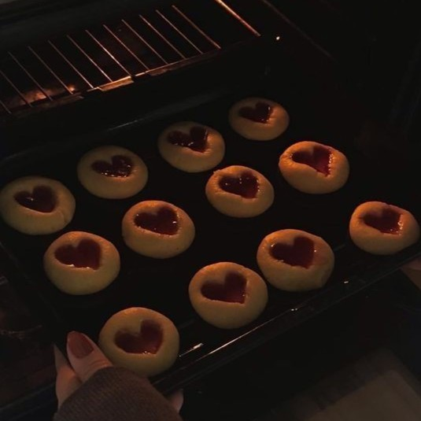
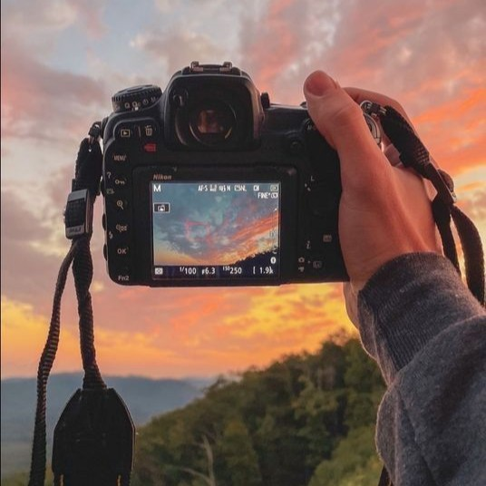

CERAMICS
Ceramics is an artistic activity that transforms clay into useful or decorative objects. Shaping clay with your hands stimulates creativity and gives great satisfaction.

CROCHET
Crochet is a creative hobby that allows people to make handmade clothes and decorations. With yarn and imagination, it is possible to create unique items and relax during free time.

HOBBY
Hobbies are activities done during free time that help people relax and express their creativity. Everyone can find a passion that makes their days more interesting.

COOKING
Cooking is a passion that combines creativity and taste. Trying new recipes allows you to discover different flavors and share special moments with others.

PHOTOGRAPHY
Photography allows you to capture moments, landscapes, and emotions in a single image. It is a perfect hobby for observing the world with more attention.